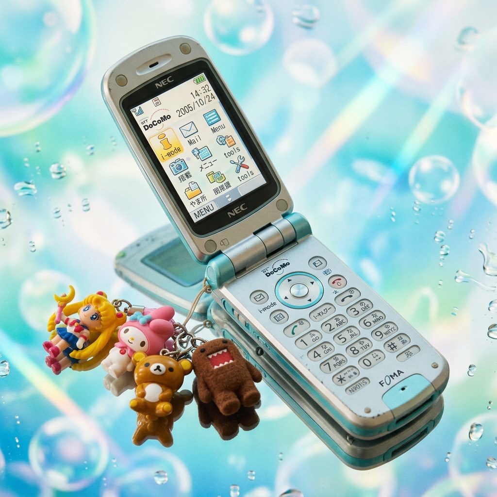

El laboratorio de Muted
C:\Users\muted\Tech\ · hardware, interfaces y pequeños programas del wired
01 / El estante de los cacharros
懐かしいテクノロジー · desliza para curiosear



02 / Dentro de la caja
componentes, pegatinas y orgullo de 200703 / Notas junto al monitor
opiniones de una web hecha a manoA mediados de los 2000, la tecnología no pretendía ser un bloque negro y minimalista de titanio. Soñábamos con interfaces translúcidas que reflejaran el cielo, botones con textura de gelatina que daban ganas de tocar, peces tropicales nadando dentro de orbes de cristal y una convivencia pacífica entre la naturaleza y la alta tecnología.
Por qué el Flat Design le robó el alma al software.
En la era de Windows Vista, Mac OS X Tiger e iOS 6, cada control en pantalla tenía volumen, brillo y textura. Un botón no era un rectángulo gris plano con texto: era una cápsula de vidrio que proyectaba una sombra suave sobre el fondo. Los iconos parecían objetos que podías sostener en tus manos.
El diseño plano actual optimizó la carga y facilitó el trabajo a las corporaciones, pero a costa de volver cada pantalla estéril e indistinguible. El Frutiger Aero representaba un futuro cálido y lleno de posibilidades, no un formulario corporativo en blanco y negro.
Vidrio esmerilado, reflejos de luz y refracción óptica que daban profundidad tridimensional.
Cielos despejados, hojas verdes con rocío y ondas acuáticas integradas al entorno digital.
La creencia sincera de que el futuro y la tecnología nos llevarían a un mundo más luminoso y limpio.